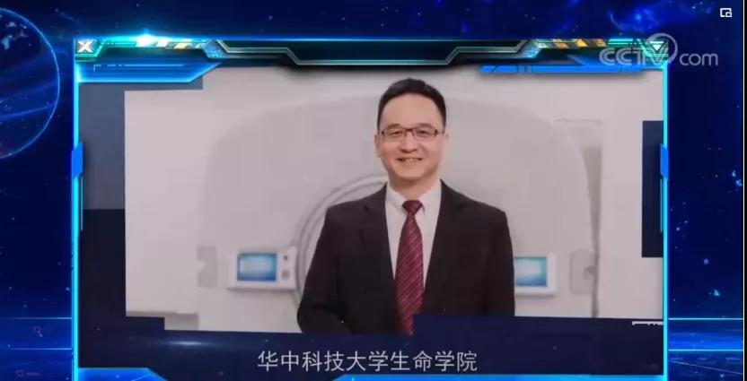
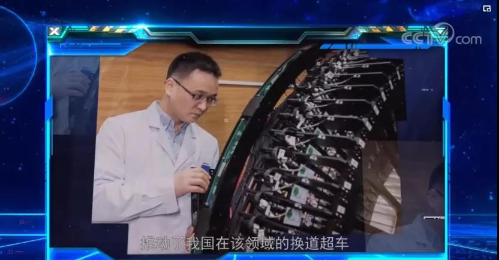
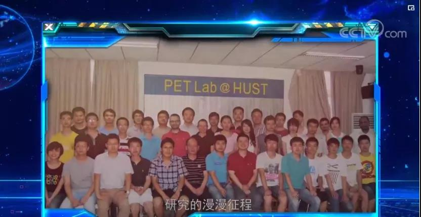
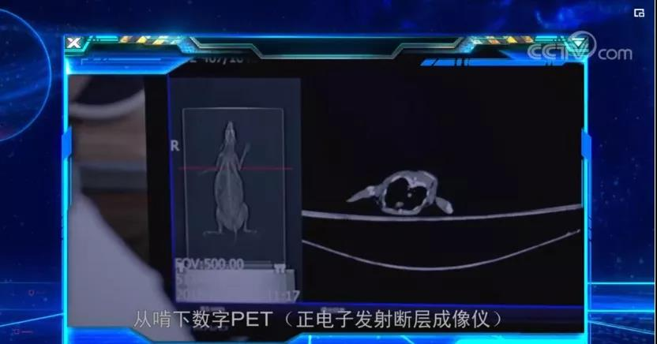
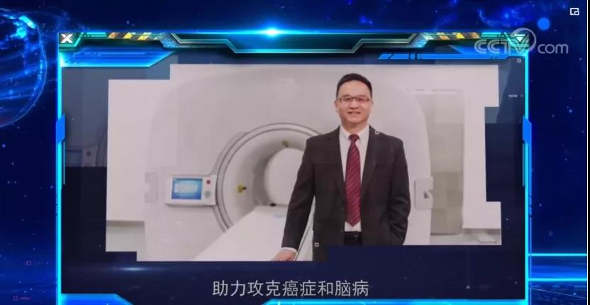

数字PET发明人谢庆国亮相《弘扬科学家精神系列人物》央视短片
新年伊始，央视网播出了《弘扬科学家精神系列人物》短片，片中亮相的华中科技大学生命科学与技术学院、武汉光电国家研究中心教授谢庆国，正是新时期科学家精神代表人物之一。
短片介绍：谢庆国带领团队在19年的努力下，完成了数字PET从原理发明、探测器研制到临床整机开发及取证的全过程，实现了国际原创与引领，打破了国际巨头在高端医疗器械领域的技术垄断，推动了我国在该领域的换道超车。

2001年，从一个铁皮屋改建成的实验室出发，在条件极为简陋的情况下，谢庆国带领他的“学生兵”，踏上了数字PET研究的漫漫征程。2010年，团队研发出世界上第一台动物全数字PET，分辨率达到亚毫米级。2014年，谢庆国决定开发人体临床全数字PET。一个草根团队，想要挺进门槛高、投入大的高端医疗器械产业领域，困难可想而知。从啃下原理创新的“硬骨头”，到造出看得见摸得着的大型设备，背后凝结的是团队无数的心血与汗水、国家科技部门“风投者”般的信任与支持。


2019年5月，全球首款临床全数字PET/CT获批国家医疗器械注册证，正式获准进入市场。这意味着癌症等重大疾病可以更早、更准、更快地被发现，PET成像或将进入高清、精准定量的时代。

中央电视台《弘扬科学家精神系列人物》短片主要体现科技工作者们沿着“科技是国家强盛之基，创新是民族进步之魂”的发展路线求真务实、勇攀高峰的精神，表彰他们取得的一批“叫得响、数得着”的科技成果。
据了解，此系列短片介绍的科学家，也均曾入选“CCTV科技盛典2019年度十大科技创新人物”。其奖项代表了新时期科学家精神的七个方面：创新、责任、情怀、挑战、担当、引领、未来，谢庆国则代表了“引领”的科学家精神。在谢庆国看来，“引领”是荣誉，更是一种责任。数字PET作为一条全新的技术路线，要想获得真正的成功，必然要有广泛应用、迭代优化、造福于民，这也是践行“引领”的责任所在。